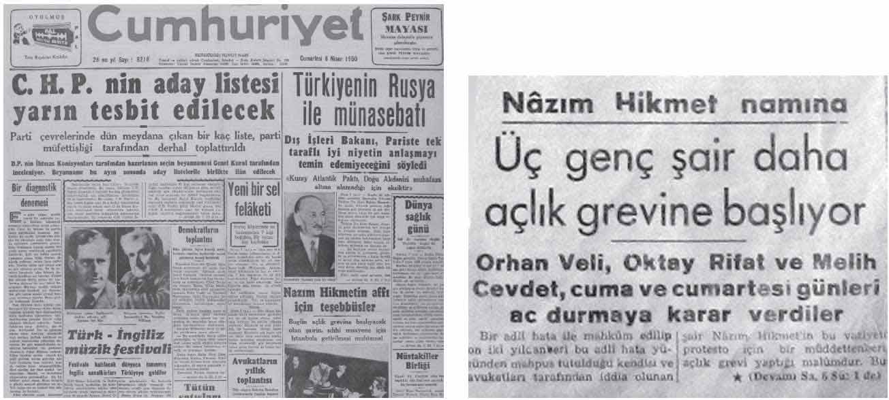

Nâzım Hikmet, bu hastalığını Angina Pektoris adlı şiirine de taşıyacaktır:
“...
Sonra şu on yıldan bu yana
benim fakir milletime ikram edebildiğim
bir tek elmam var elimde, doktor,
bir kırmızı elma:
Kalbim.
Ne arteryo-akleroz, ne nikotin, ne hapis,
işte bu yüzden, doktorcuğum, bu yüzden
bende bu ANGİNE PEKTORİS.
Bakıyorum geceye demirlerden
ve iman tahtamın üstündeki baskıya
rağmen
kalbim en uzak yıldızla birlikte çarpıyor.”
(Nâzım Hikmet, Yatar Bursa Kalesinde, s. 165)
2- Karaciğer bozukluğu
3- Tüberküloz
4- Sinirsel karışıklık ve bunalımlar
(Mehmet Ali Sebük, Nâzım’ın Özgürlük Savaşı, s. 143)
İnönü, Sebük’e Nâzım Hikmet’e rapor vermeyen cezaevi hekiminin adını sorar. Sebük, duraklar ve asıl sorunun cezaevi hekiminden değil Bursa hastanesinden kaynaklandığını belirterek yakın arkadaşı olan Bursa Cezaevi hekimi Füruzan Badana’yı –işten atılma tehlikesine karşı– korur.
“O anda ya Nihat Erim’e ya Adalet Bakanlığına telefon edildi ve Nâzım Hikmet’in hâlâ Bursa’da olması hâlinde derhal İstanbul hapishanelerinden birine aldırılmasını emretti.”
(Mehmet Ali Sebük, Nâzım’ın Özgürlük Savaşı, s. 145)
Nâzım Hikmet, aynı gün savcının talimatıyla Heykel’deki adliye binasına getirilir. Savcı, onunla kısa bir görüşme yapar. Tekrar Bursa Cezaevine götürülen Nâzım Hikmet, kanaryası Memo’nun sesini son kez dinleyecek ve Bursa şehrini, demir penceresinden son kez seyredecektir.
Bursa’daki Son Tanıklar
Yıl: 1950. Nisan’ın sekizi. Saat, 18.00. Nâzım Hikmet, Tophane sırtlarındaki Ahmet Vefik Paşa Hastanesine getirilir. Buradaki doktor kısa bir muayeneden sonra onu İstanbul’a sevk eder. Nâzım Hikmet kesintisiz olarak yaklaşık on yılını geçirdiği bu kentten, sabahın erken saatlerinde, iki sivil polis eşliğinde ayrılır.
“Nâzım ikisine de sordu:
Sizler nerelisiniz?
Ben Gaziantepliyim, dedi komiser Emin, Reşit de hemşehri sayılır o, Adanalı...
Nâzım sevindi. Nedense güneylilere bir garip yakınlık duyardı.
Ne hazin, dedi Nâzım, ben güneyi hiç bilmem, görmedim. Adana’nın pamuk tarlalarını görmeyi çok isterdim. Raşit diye bir mahkûm arkadaşım vardı, adını duymuşsunuzdur, Orhan Kemal diye imza atıyor hikâyelerine...”
(Kemal Sülker, Nâzım Hikmet’in Gerçek Yaşamı, s. 148)